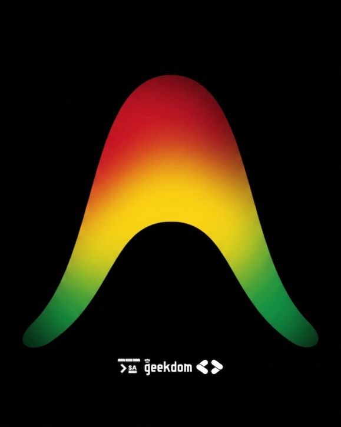

GDG San Antonio · June 19 · Geekdom
How technology, data, and community collaboration can solve real public problems — and how you're going to do it today.
Use → arrow keys or click the buttons to advance
What is civic hacking?
"Applying technology, data, and community collaboration to solve public problems in ways that are transparent, inclusive, and sustainable."
// not about breaking things — about building them better
Principle 01
The people closest to a problem should help shape the solution. Work alongside residents, community orgs, and local stakeholders to understand real needs before writing a single line of code.
The model doesn't know your community. You do. That's the part it can't generate.
Ask: Who is affected by this problem, and have we talked to them yet?
Principle 02
Public-interest technology should be transparent, reusable, and accessible. Use open-source tools and open data so communities can audit, improve, and sustain solutions long after you move on.
Ask: Can someone else build on this work tomorrow?
Principle 03
Trust is built on accurate information. A simple tool that produces reliable, well-structured data creates more community value than a beautiful app built on incomplete or inconsistent data.
Ask: Can decision-makers trust the data we're providing?
Principle 04
Solve one problem well before solving ten problems poorly. Build small, focused tools that reduce friction today. Launch, gather feedback, and improve based on real-world use — not assumptions.
Constrain the AI too — one sharp problem beats an unbounded prompt.
Ask: What's the smallest thing we can ship that creates meaningful value?
Principle 05
Success isn't measured by lines of code, downloads, or GitHub stars. Success is measured by whether people can access resources faster, participate more easily, or make better-informed decisions.
Ask: What community outcome improved because this exists?
Principle 06
The objective is not to showcase AI or the latest framework. The objective is to make life better for people. Sometimes the best solution is a spreadsheet, a form, or a simple dashboard.
Ask: Are we solving a real problem, or chasing a shiny technology?
// the craft layer
Six principles are your compass — who you build for and why. These four are your craft — how to wield AI in two hours without shipping a demo that dies on contact.
Build Principle 01
AI returns whatever's plausible unless you specify otherwise. Decide the exact shape of the output — format, fields, tone — before you prompt. A formatted 311 request. A structured timeline. A one-page action plan. Define "done" and make the model hit it.
Ask: Do I know what a good answer looks like before I ask for it?
Build Principle 02
Every AI tool has predictable failure modes: it gives advice it shouldn't, states a guess as fact, surfaces something private. Write those limits in as requirements, not disclaimers. Guardrails are part of the build.
Ask: What's the one thing this tool must never do?
Build Principle 03
The model is confidently wrong in ways only weird input reveals. Feed it the empty field, the messy transcript, the absurd request — before a resident does. Happy-path testing is how demos die in public.
Ask: Have I tried the input I'm afraid of?
Build Principle 04
"You don't need to know Python" doesn't mean skip the basics. Keys stay out of the repo. Start from the kit, not a blank file. A reproducible setup lets your judgment go to the problem instead of the plumbing.
Ask: Could someone else run this in five minutes?
Now let's build
Six principles for how to think. Four for how to build. Now go.